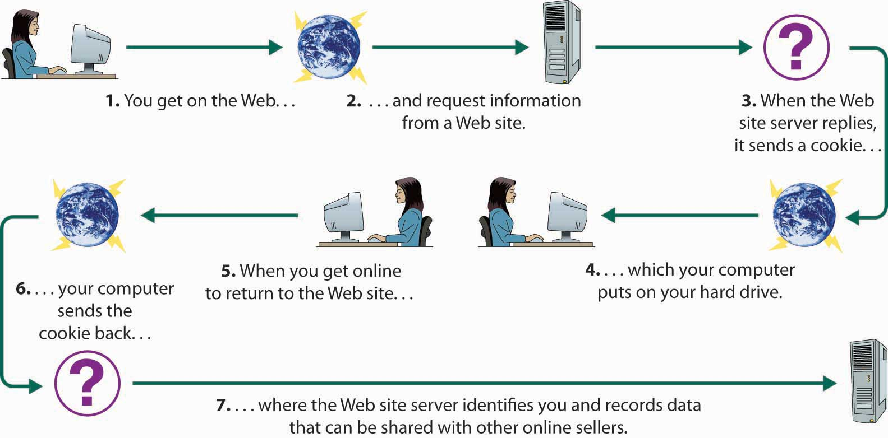

E-commerce has presented businesses with opportunities undreamt of only a couple of decades ago. But it also has introduced some unprecedented challenges. For one thing, companies must now earmark more than 5 percent of their annual IT budgets for protecting themselves against disrupted operations and theft due to computer crime and sabotage.Steve Alexander, “Feds Take Up Arms as Computer Crime Becomes Multibillion-Dollar Problem,” Minneapolis Star Tribune, Computer Crime Research Center, http://www.crime-research.org/news/2003/10/Mess0601.html (accessed June 2, 2006). The costs resulting from electronic crimes are substantial and increasing at a significant rate. It’s estimated, for example, that damage to personal computers and corporate networks from the so-called “Blaster worm” in August 2003 totaled $2 billion.“2004 E-Crime Watch Survey Shows Significant Increase in Electronic Crimes,” Carnegie Mellon, Software Engineering Institute, May 25, 2004, http://www.sei.cmu.edu/about/press/e-crime-release.html (accessed June 2, 2006). The battle against technology crime is near the top of the FBI’s list of priorities, behind only the war against terrorism and espionage.Steve Alexander, “Feds Take Up Arms as Computer Crime Becomes Multibillion-Dollar Problem,” Minneapolis Star Tribune, Computer Crime Research Center, http://www.crime-research.org/news/2003/10/Mess0601.html (accessed June 2, 2006). In addition to protecting their own operations from computer crime, companies engaged in e-commerce must clear another hurdle: they must convince consumers that it’s safe to buy things over the Internet—that credit-card numbers, passwords, and other personal information are protected from theft or misuse. In this section, we’ll explore some of these challenges and describe a number of the efforts being made to meet them.
In some ways, life was simpler for businesspeople before computers. Records were produced by hand and stored on paper. As long as you were careful to limit access to your records (and remembered to keep especially valuable documents in a safe), you faced little risk of someone altering or destroying your records. In some ways, storing and transmitting data electronically is a little riskier. Let’s look at two data-security risks associated with electronic communication: malicious programs and spoofing.
Some people get a kick out of wreaking havoc with computer systems by spreading a variety of destructive programs. Once they’re discovered, they can be combated with antivirus programs that are installed on most computers and that can be updated daily. In the meantime, unfortunately, they can do a lot of damage, bringing down computers or entire networks by corrupting operating systems or databases.
The cyber vandal’s repertory includes “viruses,” “worms” and “Trojan horses.” Viruses and worms are particularly dangerous because they can copy themselves over and over again, eventually using up all available memory and closing down the system. Trojan horses are viruses that enter your computer by posing as some type of application. Some sneak in by pretending to be virus-scanning programs designed to rid your computer of viruses. Once inside, they do just the opposite.
It’s also possible for unauthorized parties to gain access to restricted company Web sites—usually for the purpose of doing something illegal. Using a technique called “spoofing,” culprits disguise their identities by modifying the address of the computer from which the scheme has been launched. Typically, the point is to make it look as if an incoming message has originated from an authorized source. Then, once the site’s been accessed, the perpetrator can commit fraud, spy, or destroy data. You could, for example, spoof a manufacturing firm with a false sales order that seems to have come from a legitimate customer. If the spoof goes undetected, the manufacturer will incur the costs of producing and delivering products that were never ordered (and will certainly never be paid for).
Every day, technically savvy thieves (and dishonest employees) steal large sums of money from companies by means of spoofing or some other computer scheme. It’s difficult to estimate the dollar amount because many companies don’t even know how much they’ve lost: the 2004 E-Crime Watch Survey found that only 50 percent of companies surveyed have a formal process in place to track computer crimes committed against them.2004 E-Crime Watch Survey Shows Significant Increase in Electronic Crimes,” Carnegie Mellon, Software Engineering Institute, May 25, 2004, http://www.sei.cmu.edu/about/press/e-crime-release.html (accessed June 2, 2006).
In addition to the problems of data security faced by every company that stores and transmits information electronically, companies that sell goods or provide services online are also vulnerable to activities that threaten their revenue sources. Two of the most important forms of computer crime are denial of service and piracy.
A denial-of-service attack does exactly what the term suggests: it prevents a Web server from servicing authorized users. Consider the following scenario. Dozens of computers are whirring away at an online bookmaker in the offshore gambling haven of Costa Rica. Suddenly a mass of blank incoming messages floods the company’s computers, slowing operations to a trickle. No legitimate customers can get through to place their bets. A few hours later, the owner gets an e-mail that reads: “If you want your computers to stay up and running through the football season, wire $40,000 to each of 10 numbered bank accounts in Eastern Europe.”
You’re probably thinking that our choice of online gambling as an example of this scheme is a little odd, but we chose it because it’s real: in the past year, the online-gambling industry suffered hundreds of such attacks.Stephen Baker and Brian Grow, “Gambling Sites, This Is a Holdup,” BusinessWeek Online, August 9, 2004, http://www.businessweek.com/magazine/content/04_32/b3895106_mz063.hl.,mktm (accessed June 2, 2006). Because most gambling operations opt to pay the ransom and get back to business as usual, denial of service to businesses in the industry has become a very lucrative enterprise.
Online gambling operations are good targets because they’re illegal in the United States, where they can’t get any help from law-enforcement authorities. But extortionists have been known to hit other targets, including Microsoft and the Recording Industry Association of America. The problem could become much more serious if they start going after e-commerce companies and others that depend on incoming orders to stay afloat.
Technology makes it easier to create and sell intellectual property, but it also makes it easier to steal it. Because digital products can be downloaded and copied almost instantly over the Internet, it’s a simple task to make perfect replicas of your favorite copyright-protected songs, movies, and computer software, whether for personal use or further distribution. When you steal such materials, you’re cheating the countless musicians, technicians, actors, programmers, and others involved in creating and selling them. Theft cuts into sales and shrinks corporate profits, often by staggering amounts. Entertainment-industry analysts estimate that online thieves download more than 2.6 billion music files and twelve million movies every month.Lorraine Woellert, “Why the Grokster Case Matters,” BusinessWeek Online, December 27, 2004, http://www.businessweek.com/magazine/content/04_52/b3914038_mz011.htm (accessed June 2, 2006). The software industry estimates that the global market for pirated software reached $30 billion in 2004.“Pirates’ Share,” Foreign Policy, January/February 2005, http://foreignpolicy.com/story/cms.php?story_id=2766 (accessed June 2, 2006).
So, what’s being done to protect the victimized companies? Actually, quite a lot, even though it’s a daunting task, both in the United States and abroad.Office of Intellectual Property Rights, Strategy Targeting Organized Piracy, http://www.stopfakes.gov (accessed June 2, 2006). In 1998, Congress passed the Digital Millennium Copyright Act, which outlaws the copying of copyright-protected music (unless you’re copying legally acquired music for your own use). The penalties are fairly stiff: up to three years in prison and $250,000 in fines.Vangie Aurora Beal, “When Is Downloading Music on the Internet Illegal?” Webopedia, December 22, 2004,http://www.Webopedia.com/DidYouKnow/Internet/2004/music_downloading.asp (accessed June 2, 2006). To show that it means business, the music industry is also hauling offenders into court, but legal action is costly and prosecuting teenage music lovers doesn’t accomplish much. Some observers believe that the best solution is for the industry to accelerate its own efforts to offer its products online.Heather Green, “Digital Media: Don’t Clamp Down Too Hard,” BusinessWeek Online, October 14, 2002, http://www.businessweek.com/magazine/content/02_41/b3803121.htm (accessed June 2, 2006); Melissa Lynn, “Piracy and Economic National Security,” BusinessWeek Online, August 2, 2004, http://www.businessweek.com/bwdaily/dnflash/aug2004/nf2004082_1497.htm?campaign_id=search (accessed June 2, 2006). Initial attempts seem to be working: people who are willing to obey copyright laws have downloaded more than fifty million songs from the iTunes site alone.International Federation of the Phonographic Industry, “Recording Industry World Sales, 2003,” http://www.ifpi.org/site-content/statistics/worldsales.html (accessed June 2, 2006).
Builders install firewalls (or fireproof walls) in structures to keep a fire that starts in one part of a building from entering another part. Companies do something similar to protect their computer systems from outside intruders: they install virtual firewalls—software and hardware systems that prevent unauthorized users from accessing their computer networks.
You can think of the firewall as a gatekeeper that stands at the entry point of the company’s network and monitors incoming and outgoing traffic. The firewall system inspects and screens all incoming messages to prevent unwanted intruders from entering the system and causing damage. It also regulates outgoing traffic to prevent employees from inappropriately sending out confidential data that shouldn’t leave the organization.
Many people still regard the Internet as an unsafe place to do business. They worry about the security of credit-card information and passwords and the confidentiality of personal data. Are any of these concerns valid? Are you really running risks when you shop electronically? If so, what’s being done to make the Internet a safer place to conduct transactions? Let’s look a little more closely at the sort of things that tend to bother some Internet users (or, as the case may be, nonusers), as well as some of the steps that companies are taking to convince people that e-commerce is safe.
One of the more serious barriers to the growth of e-commerce is the perception of many people that credit-card numbers can be stolen when they’re given out over the Internet. Though virtually every company takes considerable precautions, they’re not entirely wrong. Cyber criminals, unfortunately, seem to be tirelessly creative. One popular scheme involves setting up a fraudulent Internet business operation to collect credit-card information. The bogus company will take orders to deliver goods—say, Mother’s Day flowers—but when the day arrives, it will have disappeared from cyberspace. No flowers will get delivered, but even worse, the perpetrator can sell or use all the collected credit-card information.
Many people also fear that Internet passwords—which can be valuable information to cyber criminals—are vulnerable to theft. Again, they’re not altogether wrong. There are schemes dedicated entirely to stealing passwords. In one, the cyber thief sets up a Web site that you can access only if you register, provide an e-mail address, and select a password. The cyber criminal is betting that the site will attract a certain percentage of people who use the same password for just about everything—ATM accounts, e-mail, employer networks. Having finagled a password, the thief can try accessing other accounts belonging to the victim. So, one day you have a nice cushion in your checking account, and the next you’re dead-broke.
If you apply for a life-insurance policy online, you may be asked to supply information about your health. If you apply for a mortgage online, you may be asked questions about your personal finances. Some people shy away from Internet transactions because they’re afraid that such personal information can be stolen or shared with unauthorized parties. Once again, they’re right: it does happen.
In addition to data that you supply willingly, information about you can be gathered online without your knowledge or consent.The Office of the Federal Privacy Commissioner, “Protecting Your Privacy on the Internet,” http://www.privacy.gov.au/internet/internet_privacy (accessed June 2, 2006). Your online activities, for example, can be captured by something called a cookie. The process is illustrated in Figure 15.12 "How Cookies Work". When you access a certain Web site, it sends back a unique piece of information to your browser, which proceeds to save it on your hard drive. When you go back to the same site, your browser returns the information, telling the site who you are and confirming that you’ve been there before. The problem is not that the cookie can identify you in the same way as a name or an address. It is, however, linked to other information about you—such as the goods you’ve bought or the services you’ve ordered online. Before long, someone will have compiled a profile of your buying habits. The result? You’ll soon be bombarded with advertisements targeted to your interests. For example, let’s suppose you check out the Web site for an online diet program. You furnish some information but decide that the program is not for you. The next time you log on, you may be greeted by a pop-up pushing the latest miracle diet.
Figure 15.12 How Cookies Work
Cookies aren’t the only form of online espionage. Your own computer, for example, monitors your Internet activities and keeps track of the URLs that you access.
So, what can companies do to ease concerns about the safety of Internet transactions? First, businesses must implement internal controls for ensuring adequate security and privacy. Then, they must reassure customers that they’re competent to safeguard credit-card numbers, passwords, and other personal information. Among the most common controls and assurance techniques, let’s look at encryption and seals of assurance.
The most effective method of ensuring that sensitive computer-stored information can’t be accessed or altered by unauthorized parties is encryptionProcess of encoding data so that only individuals or computers armed with a secret code (or key) can decode it.—the process of encoding data so that only individuals (or computers) armed with a secret code (or key) can decode it. Here’s a simplified example: You want to send a note to a friend on the other side of the classroom, but you don’t want anyone else to know what it says. You and your friend could devise a code in which you substitute each letter in the message with the letter that’s two places before it in the alphabet. So you write A as C and B as D and so on. Your friend can decode the message, but it’ll look like nonsense to anyone else. This is an oversimplification of the process. In the real world, it’s much more complicated: data are scrambled using a complex code, the key for unlocking it is an algorithm, and you need certain computer hardware to perform the encryption/decryption process.
The most commonly used encryption system for transmitting data over the Internet is called secure sockets layer (SSL). You can tell whether a Web site uses SSL if its URL begins with https instead of http. SSL also provides another important security measure: when you connect to a site that uses SSL (for example, your bank’s site), your browser will ask the site to authenticate itself—prove that it is who it says it is. You can be confident that the response is correct if it’s verified by a certificate authorityThird-party (such as VeriSign) that verifies the identify of a computer site.—a third-party (such as VeriSign) that verifies the identify of the responding computer and sends you a digital certificate of authenticity stating that it trusts the site.
Though a source of vast opportunities, e-commerce—conducting business over the Internet—also presents some unprecedented challenges, particularly in the area of security.
Companies that do business online are also vulnerable to illegal activities.
One effective method for protecting computer-stored information is encryption—the process of encoding data so that only individuals (or computers) armed with a secret code (or key) can decode it.
(AACSB) Reflective Skills
Are you, or is someone you know, hesitant to buy things over the Internet? What risks concern you? What are companies doing to ease consumers’ concerns about the safety of Internet transactions?